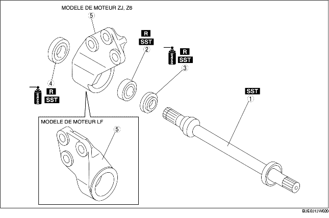

1. Démonter selon l'ordre indiqué dans le tableau.
2. Remonter dans l'ordre inverse du démontage.

.
|
1
|
Arbre de raccordement
(voir la section Note sur le démontage d'arbre de raccordement.)
(voir la section Note sur le remontage d'arbre de raccordement.)
|
|
2
|
Roulement
(voir la section Note sur le démontage de roulement.)
(voir la section Note sur le remontage de roulement.)
|
|
3
|
Joint pare-poussière (gauche)
(voir la section Note sur le remontage de joint pare-poussière (gauche).)
|
|
4
|
Joint pare-poussière (droite)
(voir la section Note sur le remontage de joint pare-poussière (droite).)
|
|
5
|
Support
|
1. Déposer l'arbre de raccordement à l'aide d'une presse.
1. Déposer le roulement et les joints pare-poussière (droite/gauche) à l'aide des outils SST.
2. Si le roulement reste sur l'arbre de raccordement, placer l'outil SST et l'arbre de raccordement sur la presse.
1. Appliquer de la graisse sur la lèvre du joint pare-poussière neuf.
2. Reposer le nouveau joint pare-poussière (droite) à l'aide des outils SST.
1. Reposer un roulement neuf à l'aide des outils SST.
1. Appliquer de la graisse sur la lèvre du joint pare-poussière neuf.
2. Reposer le joint pare-poussière neuf (gauche) en utilisant une plaque en acier et les outils SST.
1. Enfoncer l'arbre de raccordement à l'aide d'une presse et de l'outil SST.